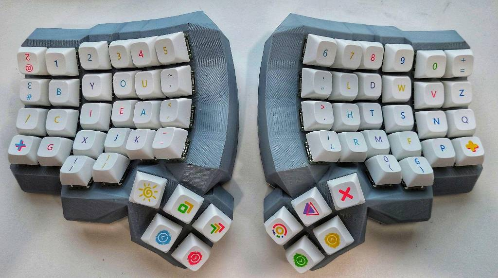
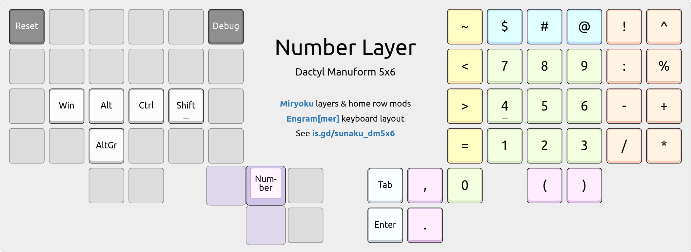
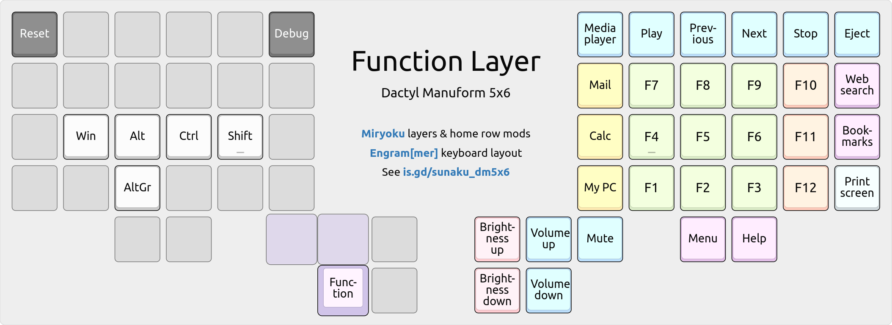
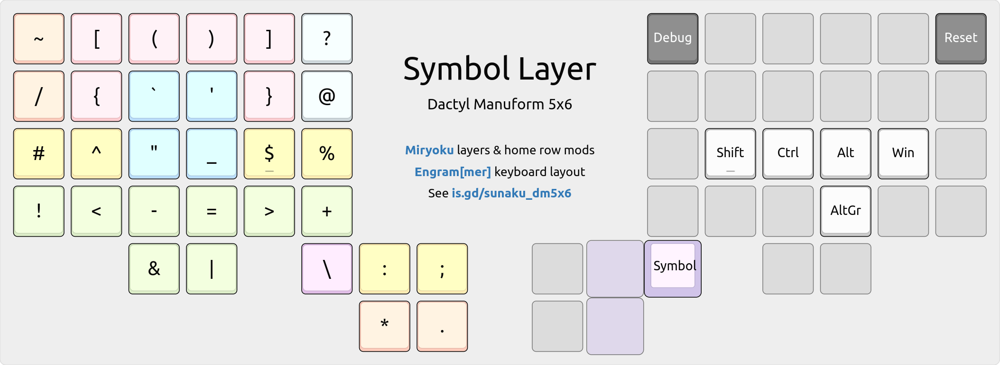
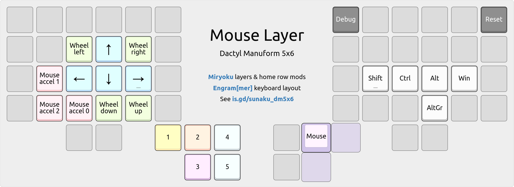
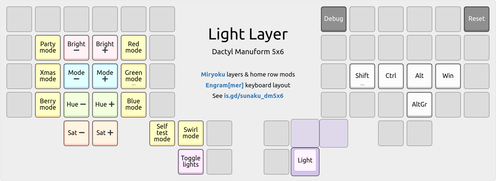

Dactyl Manuform 5x6 programmable ergonomic keyboard
NOTE: Check out the interactive map of this keyboard’s layers below!
This is my Dactyl Manuform keyboard: specifically, a 5-row and 6-column (5x6) variant manufactured by Ergohaven that I fitted with colorful Rainbow keycaps, tactile brown key-switches, and enhanced firmware with legendary Miryoku design.
Video: Introduction to the Dactyl Manuform keyboard.

Prior to this, I used an ErgoDox EZ keyboard for 6 years and then a Kinesis Advantage keyboard for 11 years before that. All of these have a shared lineage: the Advantage has contoured keywells but isn’t split, the ErgoDox is split but isn’t contoured, and the Dactyl has the best of both: it’s split and contoured!
Layers
The keyboard boots up into the following default “base” layer when powered on. When held, the purple keys in the thumb clusters activate the subsequent layers according to the legendary Miryoku’s 6-layer design with 3-key thumb activation.
Interactive: Hover your mouse over the purple keys to see each layer!
The keys are arranged in my variation of Arno Klein’s Engram 2.0 layout and they’re imbued with the legendary Miryoku home row mods tamed with enhancements.
Cursor layer

Arrow keys
The up/down arrow keys on the right-hand home row diverge from Vim’s HJKL order because it feels more natural to follow the inward-rising curve of the keyboard’s contoured keywell, which elevates the thumb above the pinky finger and, similarly, the middle finger (up arrow) above the ring finger (down arrow).
This is a longstanding preference that I formed 17 years ago, in my early days of using the Kinesis Advantage with the Dvorak layout, whose lack of HJKL provided the freedom to reimagine the arrangement of arrow keys on the home row.
Select & edit
Editing and selection keys line the outer edges of the home block, respectively. This opposition enables inward rolls, where selections can be followed by edits. For example, to copy everything, I would first tap the “Select all” key with my pinky finger and then roll inward to tap the “Copy” key with my index finger.
The copy and paste keys are stacked vertically, in that order, to allow the index finger to rake down upon them in a natural curling motion toward the palm. This order is also logical, since pasting requires something to be copied first.
The versatile “Select word/line” key at the right edge of the home row is powered by Pascal Getreuer’s word selection QMK macro, which automates common selection tasks that require holding down Control and Shift with the arrow keys:

Tapping it selects the word under the cursor; shift-tapping it selects the line. Further taps extend the selection by another word (unshifted) or line (shifted).
Number layer
A 3x3 numeric keypad (using the standard 10-key layout) occupies the home block. The period key is poised to be tapped using the metacarpal joint of the thumb, allowing the thumb to rest on the zero key, ready for more numerical data entry.
Prefix signs
Signs that commonly prefix numbers are positioned above the 3x3 numeric keypad.
~approximately$dollar amount#literal number@at the rate of
Date & time
The slash and minus keys are positioned for MM/DD and YYYY-MM-DD date entry. Similarly, the colon key is positioned above them for HH:MM:SS time stamp entry.
:time stamp separator-ISO-8601 date separator/American date separator
Inequalities
Comparison operators are positioned along the outer left edge of the home block.
~approximately<less than>greater than=equal to
The greater/equals keys are stacked vertically, in that order, to allow the index finger to rake down upon them in a natural curling motion toward the palm.
Function layer
The function keys are arranged in the same 10-key layout as the Number layer’s 3x3 numeric keypad so that you can develop common muscle memory for both layers. The remaining F10-F12 keys wrap around the home block because they’re found in shortcuts such as BIOS save/quit, fullscreen toggle, and devtools, respectively.
Symbol layer
This is the crown jewel of my keyboard’s configuration: an entire layer dedicated to the entry of symbols that are essential for computer programming. It’s the result of several hundreds of layout iterations over the last 8+ years.
👉 Red groups. Blue quotes. Yellow Vim. Green arrows. Purple flips.
\is on the thumb for escaping all other symbols without moving your hand.- For snake_case,
_is at the same spot as English’s most frequent lettere. - For assignment,
=is on the home row because it’s frequent in programming. - For strings, all quotation marks are located at the top of the home block.
- Bitwise
|&and arithmetic-+operators “flap down” and “fold up” together. - Angling arrows
->,=>,~>,<~,<=,<-, and plentiful pipes|>,<|abound!
Base layer affinity
@is at the same relative position as theTabkey on standard keyboards. They pair well: the former denotes references and the latter expands them.`is on the same key as'on the base layer, for`'legacy curly quotes.!is on the same key asShifton the base layer; both invert things.:is on the same key asEscon the base layer; they’re duals in Vim.
Vim editor shortcuts
^and$are on the home row, for jumping to the beginning/end of line.%is on the home row, for jumping to the matching delimiter at cursor.#is on the home row, to search backwards for the word under cursor.=is on the home row, to automatically indent the line or selection.{and}are on the home block, for jumping to previous/next paragraph.<and>are on the home block, for decreasing/increasing indentation.:is on the inner thumb key, for entering Vim’s command mode.;is on the outer thumb key, for repeating a f/F/t/T character search.*is on the thumb joint, to search forwards for the word under cursor.
Adjacent key bigrams
#!for shebang lines in UNIX scripts..*for regular expressions.*.for filesystem globs.()for parentheses.
Outer corner bigrams
These are easy to find because they’re on the outer corners of the keyboard.
!~for regular expression “not matching” in Perl, Ruby, and Elixir./*and*/for multi-line comments in C, CSS, and JavaScript.\/for escaped regular expression delimiters in Vim.~/for home directory paths in UNIX.?!for interrobang in English prose.
Inward rolling bigrams
<-for assignment in R and in Elixir’swithstatements.->for thin arrows in C, C++, and Elixir.=>for fat arrows in Perl, Ruby, and Elixir.=~for regular expression matching in Perl, Ruby, and Elixir.!~for regular expression “not matching” in Perl, Ruby, and Elixir.!=for “not equal to” value comparison in many languages.<=for “less than or equal to” comparison in many languages.^=for bitwise XOR assignment in C and related languages.|>for the pipe operator in Elixir.!(for negating a group in Boolean expressions."$for quoted variable substitution in Bourne shell.!$for last argument of previous command in Bourne shell.$?for exit status of previous command in Bourne shell.<%for directive tags in Ruby’s ERB and Elixir’s EEx templates.#{for string interpolation in Ruby and Elixir.#[and![for metadata attributes in Rust.`'for legacy curly quotes./?for query parameters in URLs./*for starting comments in C, CSS, and JavaScript.[]for square brackets.<>for angle brackets.{}for curly braces.
Outward rolling bigrams
~>for pessimistic version constraint in SemVer.-=for negative accumulation in C and related languages.+=for accumulation in C and many languages.%=for modulo assignment in C and related languages.>=for “greater than or equal to” value comparison.>&and&<for file descriptor redirection in Bourne shell.$_for value of last argument of previous command in Bourne shell.%>for directive tags in Ruby’s ERB and Elixir’s EEx templates.${for variable interpolation in Bourne shell.%{for maps (hash tables) in Elixir.~/for home directory paths in UNIX.*/for closing comments in C, CSS, and JavaScript.
Mouse layer
Movement keys are located centrally in the home block, resembling WASD keys, and mouse acceleration controls are poised for pinky finger access, so you can independently move the mouse pointer and also change its speed at the same time.
Mousewheel down/up keys are also placed on the home block, specifically on
the same keys as J/K (down/up in Vim) on the base layer for muscle memory reuse.
Light layer
Keys for lowering/raising light settings line the central columns of home block, whereas keys for applying lighting modes line the outer edges of the home block.
Firmware
My keyboard’s entire QMK firmware configuration, as described in this article, is
made available on GitHub in the sunaku_dm5x6 branch of my
personal QMK fork.
~/qmk_firmware/keyboards/handwired/dactyl_manuform/5x6_5/keymaps/sunaku/
├── config.h
├── features -> getreuer/features
├── getreuer/
├── keymap_config.json
├── keymap_footer.c
├── keymap_header.c
├── Makefile
├── README.md
└── rules.mk
Extra QMK patches
This configuration includes additional enhancements on top of the standard QMK:
- My crossover bilateral combinations patch, used for Miryoku home row mods.
- Pascal Getreuer’s word selection QMK macro, utilized in the cursor layer.
QMK configurator app
You can upload the provided QMK Keymap JSON file named
keymap_config.json into the QMK Configurator app to view or
customize the keymap and all of its layers. When you’re finished, download the
keymap back to the same file, overwriting it.
Building the firmware
Navigate into the directory shown in the Firmware section above and run make to:
- Convert the
keymap_config.jsonfile into C source code. - Wrap the C source code with a custom header and footer.
- Compile the wrapped up C source code using
qmk compile. - Flash the compiled firmware (HEX file) to the keyboard.
All these steps are handled by the provided Makefile, shown below for reference:
# NOTE: Don't name the QMK Configurator JSON keymap file as "keymap.json"
# because `qmk compile` directly translates it into C and compiles it too,
# thereby completely bypassing this Makefile and our keymap header/footer!
TOPLEVEL=`git rev-parse --show-toplevel`
KEYBOARD=handwired/dactyl_manuform/5x6_5
KEYMAP=sunaku
all: flash
flash: build
qmk flash -kb $(KEYBOARD) -km $(KEYMAP)
build: keymap.c config.h rules.mk
test ! -e keymap.json # see comment at the top of this Makefile
qmk compile -kb $(KEYBOARD) -km $(KEYMAP)
keymap.c: keymap_config.json keymap_header.c keymap_footer.c config.h
qmk json2c -o $@ $<
spot=$$( awk '/THIS FILE WAS GENERATED/ { print NR-1 }' $@ ) && \
sed -e "$$spot r keymap_header.c" -e "$$ r keymap_footer.c" -i $@
clean:
qmk clean
clobber: clean
rm -fv keymap.c
rm -fv $(TOPLEVEL)/$$( echo $(KEYBOARD) | tr / _ )_$(KEYMAP).hex
.PHONY: clean clobber build flash